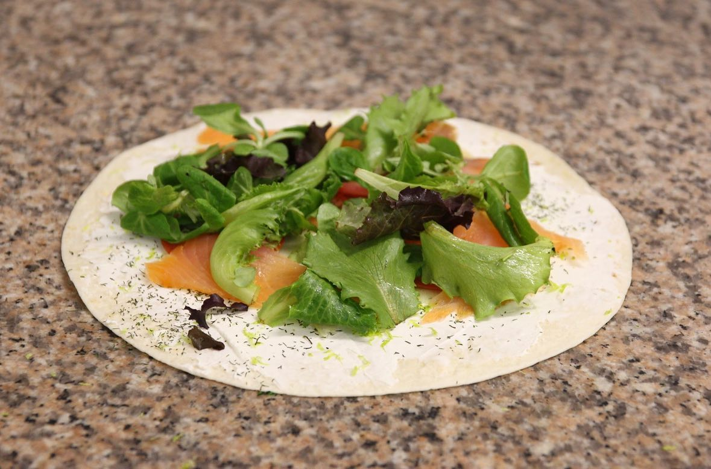
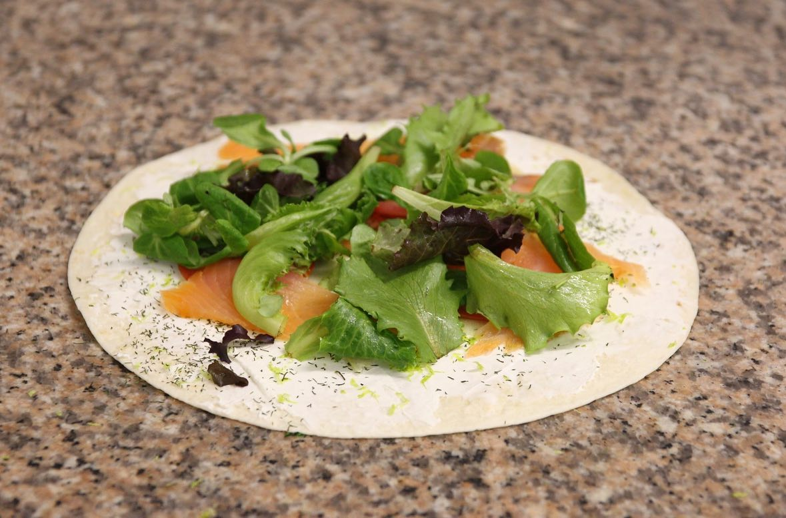
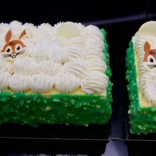
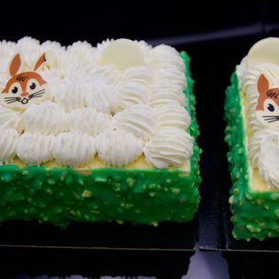

À Lamasquère
À Lamasquère 05 61 76 11 92
05 61 76 11 92Notre passion du pain
Bienvenue dans notre boulangerie-pâtisserie artisanale ! Avec une passion pour l'art de la boulangerie et de la pâtisserie, nous sommes ravies de vous accueillir dans notre établissement dirigé par deux jeunes femmes de 24 ans, Lucie et Emma. Chez nous, chaque création est le fruit d'un savoir-faire traditionnel allié à une touche d'innovation moderne.

Des produits frais
Nous mettons un point d'honneur à utiliser des ingrédients frais et de qualité pour vous offrir des produits qui éveilleront vos papilles.
 

Des pains traditionnels
De délicieux pains traditionnels et spéciaux, des croissants et autres viennoiseries 100% maison, des pâtisseries préparées par Lucie, notre cheffe pâtissière et tourière, avec amour ❤... Notre assortiment est aussi varié que savoureux.
Une ambiance chaleureuse
Venez vous régaler dans une ambiance chaleureuse et conviviale. Nous sommes impatientes de vous servir et de vous faire découvrir nos produits artisanaux.


 
